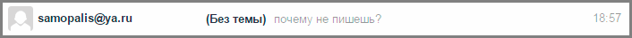

Как отправить письмо по электронной почте
В этом уроке я покажу, как правильно отправлять письма по электронной почте. Это базовый урок, в котором не будут рассмотрены все функции и возможности почтовых сайтов. Мы просто напишем и отправим сообщение, на которое сразу же получим ответ.
Как написать письмо
Рассмотрим классическую ситуацию. У нас есть адрес электронной почты, на который нужно написать письмо. Он состоит исключительно из английских букв и/или цифр, знака @ посередине и названия почтового сайта (mail.ru, например).
Первое, что нужно сделать, чтобы отправить письмо, это открыть свой электронный ящик. То есть зайти на почтовый сайт, на котором находится Ваш адрес, ввести от него логин и пароль. Откроется личный кабинет.
Вот как он выглядит в почте Яндекса:
Так в Mail.ru:

Так в Gmail:
На других сайтах личный кабинет выглядит примерно также: посередине список сообщений, слева разделы, сверху кнопки для работы.
Нам нужна кнопка под названием «Написать». Еще она может называться «Написать письмо». Как правило, находится такая кнопка на самом видном месте: либо сверху, либо слева.
Вот как она выглядит в Яндексе:

Так в Mail.ru:
Вот так в Gmail:

Откроется форма для отправки. На всех почтовых сайтах она выглядит примерно одинаково. Здесь нас интересуют только три поля: Кому, Тема и большая часть для ввода текста.
Вот эти поля в почте Яндекса:
А вот они в Mail.ru:
Так нужные нам части выглядят в Gmail:
Куда печатать адрес
Часть, в которую нужно печатать адрес электронной почты, называется «Кому».
Допустим, у нас есть адрес, на который нужно отправить сообщение. Вот он:
Щелкаем левой кнопкой мышки внутри поля «Кому» и печатаем его туда. Чтобы набрать значок @ на клавиатуре, нужно нажать на кнопку Shift и, не отпуская ее, нажать один раз на клавишу клавиатуры с цифрой 2 (вверху, над буквами).
Важно: адрес нужно печатать только английскими буквами, без пробелов и без точки в конце.
Что печатать в тему письма
После того, как адрес напечатан, щелкаем левой кнопкой внутри поля «Тема». Здесь нужно напечатать от кого сообщение или о чем оно.

Многие недооценивают значимость этого поля и ничего в него не печатают. Другие же наоборот печатают туда то, о чем хотят написать в письме, то есть используют его для печати текста. Ошибаются и первые и вторые. Попробуем разобраться, в чем тут дело.
Допустим, мы в поле «Тема» ничего не напечатали и отправили письмо. Человек его получит примерно в таком виде:
Первое, что он увидит: от кого пришло сообщение. В моем случае, это адрес электронной почты. Сразу после него идет тема и небольшая часть текста из самого письма.
Как видите, по этим данным совершенно не понятно ни от кого оно, ни что в нем находится.
Проблема в том, что многие люди автоматически сочтут такое сообщение рекламой и даже не откроют. А другие пользователи испугаются, что это вирус и сразу удалят его.
Получается, мы рискуем столкнуться с тем, что отправленное письмо не будет прочитано. Причем, мы об этом даже не узнаем. Для нас это будет выглядеть так, как будто сообщение было проигнорировано. А получатель будет уверен, что ему ничего не приходило.
Другая чуть менее распространенная ситуация, когда в поле «Тема» печатают сам текст сообщения. Вот пример того, как его увидит получатель:
Мало того, что это выглядит нелепо, так еще и не весь текст поместился – часть обрезалась. Если сравнить данную ситуацию с обычной бумажной почтой, то, получается, мы отправили пустой конверт, на котором написали текст письма.
Так что же должно быть в поле «Тема»? В идеале в нем нужно написать что-то такое, что подтолкнет человека открыть письмо. Прочитав тему, он должен понять, что это нужное сообщение, которого он ждет.
Пример:
- Запись на консультацию
- Отчет о работе
- Результаты теста
И лучше, конечно, уточнить, что это за консультация, отчет о какой именно работе и что за тест. То есть нужно сделать так, чтобы по теме человек понял, о чем или от кого сообщение.
Пример правильной «Темы»:
- Запись на консультацию к терапевту
- Отчет о работе по проекту №325
- Результат теста по физике Иванова А.А.
Пример неправильной «Темы»:
- От меня
- Срочно
- Открой
Куда печатать текст
Текст письма, то есть его содержание, нужно печатать в самое большое поле из всех. В любой почтовой системе оно предназначено именно для этого.
Щёлкаем по нему левой кнопкой мышки и печатаем, то, что хотим написать. Если это поле Вам кажется недостаточно большим, не переживайте, оно автоматически расширится, когда текста будет много.
Как отправить письмо
Для отправки письма нужно нажать на специальную кнопку. Обычно она так и называется - «Отправить» - и находится либо вверху, над полями, либо внизу, под ними. А во многих почтовых сайтах она есть и там и там.
На кнопку «Отправить» нужно нажимать только один раз! Чем больше раз Вы нажмете на неё, тем больше одинаковых сообщений придет получателю.
Принцип следующий: написали письмо, навели мышку на «Отправить», щёлкнули один раз левой кнопкой и ждете. Как правило, через несколько секунд почтовый сайт напишет, что сообщение отправлено.